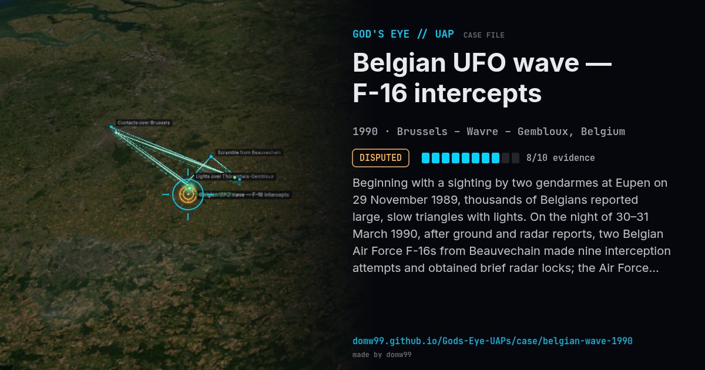

Belgian UFO wave — F-16 intercepts
DISPUTED

Beginning with a sighting by two gendarmes at Eupen on 29 November 1989, thousands of Belgians reported large, slow triangles with lights. On the night of 30–31 March 1990, after ground and radar reports, two Belgian Air Force F-16s from Beauvechain made nine interception attempts and obtained brief radar locks; the Air Force published its report openly.
Explanation
The Belgian Air Force report left the radar contacts unexplained; critics attribute the F-16 lock-ons to the other fighter and to Bragg scattering. The famous Petit-Rechain triangle photo was admitted to be a hoax in 2011.
What was seen
Shape: Dark triangle with bright corner lights
Witnesses: ~13,500 reports in the wave; gendarmes; Air Force
Duration: Wave: Nov 1989 – Apr 1990
Browse
- 1990s
- Disputed
- Radar-visual cases
- Official government documents
- Many independent witnesses
- Military witnesses
- Radar tracking
- Police witnesses
- Lights and fireballs
- Triangles and V shapes